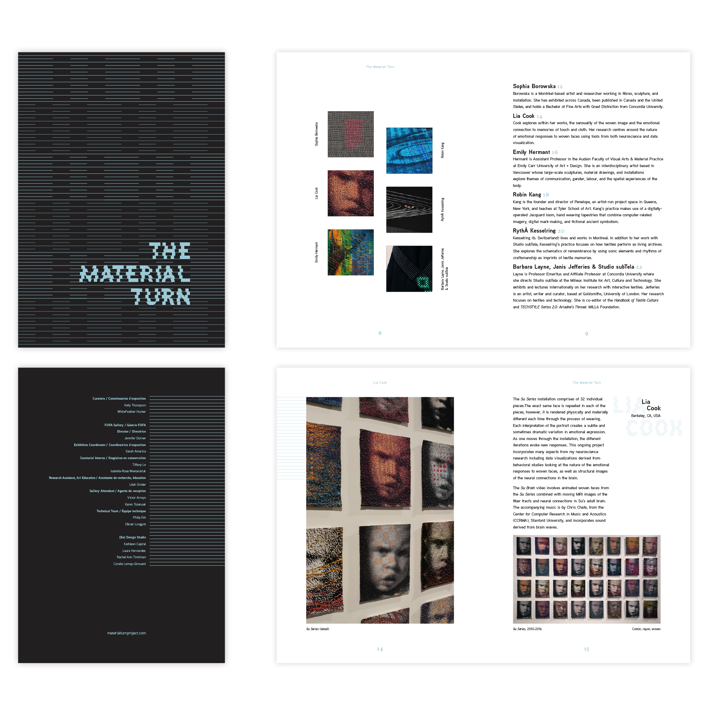

2017-2018, digital, print (InDesign)
The goal was to design a catalogue for The Material Turn, an art exhibition organized by Kelly Thompson and WhiteFeather Hunter and presented by the FOFA Gallery. The exhibition was based on The Material Project, which focused on the theme of materializing data through textiles. The primary use of the catalogue was to showcase the different pieces that twelve artists had created through their participation in the project, which meant that the focus of the layout needed to be on the images. The catalogue also needed to work for both print and digital viewing and had a restricted budget. The typographic treatment pointed directly towards the digital aspect of the project, while the line pattern was a more subtle combination of both the digital and the material aspect—it represented the many threads that create a textile.